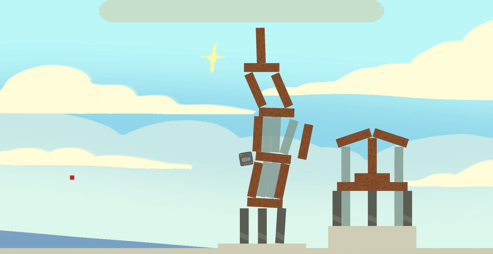

Slime-A-Pult
A strategy game where the player launches slimes with different abilities to destroy structures.
A strategy game where the player launches slimes with different abilities to destroy structures.
Slime-A-Pult -also called project Fortress Shooter- is a team project made during my study at the Hanzehogeschool.
The project was made by a small team of 2 graphic designers, a gameplay designer and me as the programmer.
The goal of this project was to create "emergent gameplay": to create multiple game mechanics that players can use to create their own unexpected strategies.
There are multiple levels in the game, in these levels the player can choose from different types of slimes to launch, each slime has different stats and abilities that can work together to create new strategies.
A certain percentage of the structures need to be destroyed before the player can progress to the next level, the destruction percentage as well as the amount of launched slimes is displayed at the end of a level as some form of score.

Gameplay screenshot of a slime hitting a structure.
Players can pick which slime they want to launch from a menu, these slimes have different abilities that adds gameplay elements or destroys structures.
Some of the slime abilities available to the player are:
→ A Slingshot slime that transforms into a slingshot that can grab slimes and blocks so the player can re-launch them.
→ A Bouncy slime that transforms into a speed-boosting trampoline.
→ An Ice slime that freezes blocks to weaken them.
→ A Heavy slime that has a much stronger impact than other slimes.

Slime selection menu.
The projectile selector script contains list that contains all available slime prefabs, the selection UI is generated based on this list, which makes it easy for a designer to add new slimes by dragging a new prefab into the list.
The second projectile list in this script was only used for debugging the game while it was in development, it adds more slimes to the selection system that can quickly clear levels for testing purposes.
<code> using System.Collections.Generic; using UnityEngine; using UnityEngine.UI; public class ProjectileSelector : MonoBehaviour { [SerializeField] List<GameObject> ProjectileList; [SerializeField] List<GameObject> ProjectileDBGList; [SerializeField] bool DBG; [SerializeField] GameObject Button; Animator animator; void Start() { GenerateList(); animator = GetComponentInParent<Animator>(); } public void ToggleWindow() { animator.SetBool("Open", !animator.GetBool("Open")); } void GenerateList() { foreach(GameObject Projectile in ProjectileList) { GameObject Btn = Instantiate(Button, transform); Btn.GetComponent<Image>().sprite = Projectile.GetComponent<ProjectileData>().Icon; Btn.GetComponent<Button>().onClick.AddListener(delegate { ToggleWindow(); }); Btn.GetComponent<Button>().onClick.AddListener(delegate { GameManager.Instance.MainSlingshot.SpawnProjectile(Projectile); }); } if (DBG) { foreach (GameObject Projectile in ProjectileDBGList) { GameObject Btn = Instantiate(Button, transform); Btn.GetComponent<Image>().sprite = Projectile.GetComponent<ProjectileData>().Icon; Btn.GetComponent<Button>().onClick.AddListener(delegate { ToggleWindow(); }); Btn.GetComponent<Button>().onClick.AddListener(delegate { GameManager.Instance.MainSlingshot.SpawnProjectile(Projectile); }); } } } } </code></plaintext></pre> </div> </div> </div> </div> </body> </html>